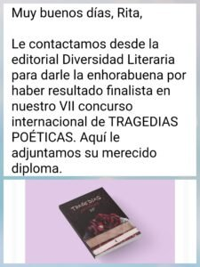

<?xml version="1.0" encoding="UTF-8"?><rss version="2.0"
	xmlns:content="http://purl.org/rss/1.0/modules/content/"
	xmlns:wfw="http://wellformedweb.org/CommentAPI/"
	xmlns:dc="http://purl.org/dc/elements/1.1/"
	xmlns:atom="http://www.w3.org/2005/Atom"
	xmlns:sy="http://purl.org/rss/1.0/modules/syndication/"
	xmlns:slash="http://purl.org/rss/1.0/modules/slash/"
	>

<channel>
	<title>Poemas | Rita Valero</title>
	<atom:link href="./index.html" rel="self" type="application/rss+xml" />
	<link>../../../index.html</link>
	<description>Voz y palabras</description>
	<lastBuildDate>Wed, 26 Nov 2025 12:39:26 +0000</lastBuildDate>
	<language>ca</language>
	<sy:updatePeriod>
	hourly	</sy:updatePeriod>
	<sy:updateFrequency>
	1	</sy:updateFrequency>
	<generator>https://wordpress.org/?v=7.1.3</generator>

<image>
	<url>../../../wp-content/uploads/2021/08/cropped-favicon-rita-valero-32x32.jpg</url>
	<title>Poemas | Rita Valero</title>
	<link>../../../index.html</link>
	<width>32</width>
	<height>32</height>
</image> 
	<item>
		<title>Llibre: SENY</title>
		<link>../../../project/llibre-seny/index.html</link>
					<comments>../../../project/llibre-seny/index.html#respond</comments>
		
		<dc:creator><![CDATA[Rita Valero]]></dc:creator>
		<pubDate>Thu, 29 Feb 2024 10:24:57 +0000</pubDate>
				<guid isPermaLink="false">../../../index.html#038;p=1612</guid>

					<description><![CDATA[Llibre de poemes: SENY Seny, és la sana capacitat mental que predisposa a una justa percepció, comprensió i actuació. «Sensatesa». «Cordura». «Sentit comú». SENY és un viatge poètic en 3 actes. 33 poemes visuals: 11 al primer capítol: Abans. 11 al segon capítol: Després. 11 al tercer capítol: Ara. Alguns molt breus, altres només curts, [&#8230;]]]></description>
										<content:encoded><![CDATA[<p>Llibre de poemes: <strong>SENY</strong><br />
<strong>Seny</strong>, és la sana capacitat mental que predisposa a una justa percepció, comprensió i actuació.</p>
<p>«Sensatesa». «Cordura». «Sentit comú».</p>
<p><strong>SENY</strong> és un viatge poètic en 3 actes.</p>
<p><strong>33 poemes visuals</strong>:</p>
<blockquote>
<div dir="auto">11 al primer capítol: Abans.</div>
<div dir="auto">11 al segon capítol: Després.</div>
<div dir="auto">11 al tercer capítol: Ara.</div>
</blockquote>
<div dir="auto">
<div dir="auto">Alguns molt breus, altres només curts, d’altres més llargs.</div>
<div dir="auto">Uns suaus i dolços, altres més durs.</div>
<div dir="auto">Uns que et faran somriure, altres que et compungiran el cor.</div>
<div dir="auto">Però tots ells escrits sempre amb <strong>Seny.</strong></div>
</div>
<div dir="auto">
<p>&nbsp;</p>
</div>
<div dir="auto">
<div dir="auto"><strong>Seny </strong>és un llibre amb missatges contundents, escrits en forma de poema.</div>
<div dir="auto">Poesia gràfica. Cartells. Consignes.</div>
</div>
<div dir="auto">
<p>&nbsp;</p>
</div>
<div dir="auto">Partint del maltractament i l’abús (Abans), passant pel reconeixement i la consciència (Després), fins a la coherència i el seny (Ara).</div>
<div dir="auto">
<p>&nbsp;</p>
</div>
<div dir="auto">
<div dir="auto">A <strong>SENY</strong>, de forma de poètica, es fa una crida a sortir de la indefensió i el trauma, a través del reconeixement d’allò viscut, de la presència, i de l’estima a la natura i a la vida.</div>
<p>&nbsp;</p>
<p>I tu, ja tens <strong>Seny</strong>?</p>
</div>
<p>Pots comprar el llibre seguint l&#8217;enllaç: <a href="https://amzn.eu/d/69W8uiu" target="_blank" rel="noopener">Seny</a></p>
<p>&nbsp;</p>
<p>&nbsp;</p>
]]></content:encoded>
					
					<wfw:commentRss>../../../project/llibre-seny/feed/index.html</wfw:commentRss>
			<slash:comments>0</slash:comments>
		
		
			</item>
		<item>
		<title>FINALISTA  en el VII Concurso Internacional de Diversidad Literaria</title>
		<link>../../../project/finalista-en-el-vii-concurso-internacional-de-diversidad-literaria/index.html</link>
					<comments>../../../project/finalista-en-el-vii-concurso-internacional-de-diversidad-literaria/index.html#respond</comments>
		
		<dc:creator><![CDATA[Rita Valero]]></dc:creator>
		<pubDate>Fri, 14 Oct 2022 11:41:02 +0000</pubDate>
				<guid isPermaLink="false">../../../index.html#038;p=1527</guid>

					<description><![CDATA[]]></description>
										<content:encoded><![CDATA[<p></p>
]]></content:encoded>
					
					<wfw:commentRss>../../../project/finalista-en-el-vii-concurso-internacional-de-diversidad-literaria/feed/index.html</wfw:commentRss>
			<slash:comments>0</slash:comments>
		
		
			</item>
		<item>
		<title>POEMES EN CATALÀ. SÓC ÈTER</title>
		<link>../../../project/poemes-en-catala-soc-eter/index.html</link>
					<comments>../../../project/poemes-en-catala-soc-eter/index.html#respond</comments>
		
		<dc:creator><![CDATA[Rita Valero]]></dc:creator>
		<pubDate>Mon, 27 Jun 2022 08:08:57 +0000</pubDate>
				<guid isPermaLink="false">../../../index.html#038;p=1206</guid>

					<description><![CDATA[POEMES EN CATALÀ &#160; SÓC ÈTER &#160; Sóc èter, un espai-temps sense matèria. &#160; Sóc èter, quan medito, quan m&#8217;abstrec. &#160; Sóc èter, absència de partícules i buit fèrtil. &#160; Sóc èter, quan no hi sóc, sóc èter. &#160; Partícula-antipartícula, que desapareix en el temps infinitesimal. &#160; Sóc èter, element subtil, incorruptible, inalterable. Quintaessència que [&#8230;]]]></description>
										<content:encoded><![CDATA[<h1><strong>POEMES EN CATALÀ</strong></h1>
<p>&nbsp;</p>
<h2><b>SÓC ÈTER</b></h2>
<p>&nbsp;</p>
<blockquote><p><em><span style="font-weight: 400;">Sóc èter,</span></em></p>
<p><em><span style="font-weight: 400;">un espai-temps sense matèria.</span></em></p>
<p>&nbsp;</p>
<p><em><span style="font-weight: 400;">Sóc èter,</span></em></p>
<p><em><span style="font-weight: 400;">quan medito, quan m&#8217;abstrec.</span></em></p>
<p>&nbsp;</p>
<p><em><span style="font-weight: 400;">Sóc èter,</span></em></p>
<p><em><span style="font-weight: 400;">absència de partícules i buit fèrtil.</span></em></p>
<p>&nbsp;</p>
<p><em><span style="font-weight: 400;">Sóc èter, quan no hi sóc, sóc èter.</span></em></p>
<p>&nbsp;</p>
<p><em><span style="font-weight: 400;">Partícula-antipartícula,</span></em></p>
<p><em><span style="font-weight: 400;">que desapareix en el temps infinitesimal.</span></em></p>
<p>&nbsp;</p>
<p><em><span style="font-weight: 400;">Sóc èter,</span></em></p>
<p><em><span style="font-weight: 400;">element subtil, incorruptible, inalterable.</span></em></p>
<p><em><span style="font-weight: 400;">Quintaessència que omple l&#8217;espai.</span></em></p>
<p>&nbsp;</p>
<p><em><span style="font-weight: 400;">Sóc èter, quan no hi sóc, sóc èter.</span></em></p>
<p>&nbsp;</p>
<p><em><span style="font-weight: 400;">Ni freda, ni calenta, ni humida, ni seca.</span></em></p>
<p>&nbsp;</p>
<p><em><span style="font-weight: 400;">Sóc èter,</span></em></p>
<p><em><span style="font-weight: 400;">buit amb curvatura,</span></em></p>
<p><em><span style="font-weight: 400;">moviment circular,</span></em></p>
<p><em><span style="font-weight: 400;">energia obscura que postula, una explicació, </span></em></p>
<p><em><span style="font-weight: 400;">a un univers en acceleració.</span></em></p></blockquote>
<p>&nbsp;</p>
<p>&nbsp;</p>
]]></content:encoded>
					
					<wfw:commentRss>../../../project/poemes-en-catala-soc-eter/feed/index.html</wfw:commentRss>
			<slash:comments>0</slash:comments>
		
		
			</item>
		<item>
		<title>MI LUGAR SEGURO</title>
		<link>../../../project/mi-lugar-seguro/index.html</link>
					<comments>../../../project/mi-lugar-seguro/index.html#respond</comments>
		
		<dc:creator><![CDATA[Rita Valero]]></dc:creator>
		<pubDate>Fri, 24 Jun 2022 09:08:21 +0000</pubDate>
				<guid isPermaLink="false">../../../index.html#038;p=1188</guid>

					<description><![CDATA[MI LUGAR SEGURO Mi lugar seguro no es un sitio concreto, es un camino de ronda que me lleva al mar.  &#160; El olor a pino y a sal, los plumeros de las cañas,  batidas al viento.  &#160; Las rocas,  como cuevas misteriosas por explorar.  &#160; Los frutos rojos  que contrastan con los mil verdes [&#8230;]]]></description>
										<content:encoded><![CDATA[<p><strong>MI LUGAR SEGURO</strong></p>
<blockquote><p><span style="font-weight: 400;">Mi lugar seguro no es un sitio concreto,</span></p>
<p><span style="font-weight: 400;">es un camino de ronda que me lleva al mar. </span></p>
<p>&nbsp;</p>
<p><span style="font-weight: 400;">El olor a pino y a sal, los plumeros de las cañas, </span></p>
<p><span style="font-weight: 400;">batidas al viento. </span></p>
<p>&nbsp;</p>
<p><span style="font-weight: 400;">Las rocas, </span></p>
<p><span style="font-weight: 400;">como cuevas misteriosas por explorar. </span></p>
<p>&nbsp;</p>
<p><span style="font-weight: 400;">Los frutos rojos </span></p>
<p><span style="font-weight: 400;">que contrastan con los mil verdes de la naturaleza. </span></p>
<p>&nbsp;</p>
<p><span style="font-weight: 400;">Los estragos hechos por el aire </span></p>
<p><span style="font-weight: 400;">en los juncos tiernos.</span></p>
<p>&nbsp;</p>
<p><span style="font-weight: 400;">El camino, caminar.</span></p>
<p>&nbsp;</p>
<p><span style="font-weight: 400;">Notar bajo mis pies </span></p>
<p><span style="font-weight: 400;">la tierra húmeda, las piedras, </span></p>
<p><span style="font-weight: 400;">lo mullido de la hierba.</span></p>
<p>&nbsp;</p>
<p><span style="font-weight: 400;">1, 2, 3, 4, 5, 6. </span></p>
<p><span style="font-weight: 400;">6, sí.</span></p>
<p>&nbsp;</p>
<p><span style="font-weight: 400;">Hasta 6 tonos de verde diferentes, distingo.</span></p>
<p>&nbsp;</p>
<p><span style="font-weight: 400;">Hay uno que se asemeja más al marrón, </span></p>
<p><span style="font-weight: 400;">y de marrones podría distinguir:</span></p>
<p><span style="font-weight: 400;">Los que se acercan al amarillo.</span></p>
<p>&nbsp;</p>
<p><span style="font-weight: 400;">Los beige, quizá más secos.</span></p>
<p><span style="font-weight: 400;">Los marrones oscuros, los marrones pálidos, </span></p>
<p><span style="font-weight: 400;">los marrones de corteza, los marrones con musgo.</span></p>
<p>&nbsp;</p>
<p><span style="font-weight: 400;">Todos ellos forman parte de este paisaje, de este regalo.</span></p>
<p><span style="font-weight: 400;">Al igual que el mar:</span></p>
<p><span style="font-weight: 400;">¿gris? ¿plateado? ¿turquesa?</span></p>
<p>&nbsp;</p>
<p><span style="font-weight: 400;">Muy turquesa, hoy.</span></p>
<p><span style="font-weight: 400;">Y después,</span></p>
<p><span style="font-weight: 400;">se torna verde.</span></p>
<p><span style="font-weight: 400;">Verde verdoso, también.</span></p>
<p>&nbsp;</p>
<p><span style="font-weight: 400;">Y luego oscuro, </span></p>
<p><span style="font-weight: 400;">un azul, marino,</span></p>
<p><span style="font-weight: 400;">un verde azulado.</span></p>
<p>&nbsp;</p>
<p><span style="font-weight: 400;">Plata, en definitva plateado.</span></p>
<p><span style="font-weight: 400;">Y antes de emprender la vuelta,</span></p>
<p><span style="font-weight: 400;">me paro a escuchar</span></p>
<p><span style="font-weight: 400;">el sonido de las olas,</span></p>
<p><span style="font-weight: 400;">de las olas del mar.</span></p>
<p>&nbsp;</p>
<p><span style="font-weight: 400;">En las rocas, </span></p>
<p><span style="font-weight: 400;">en las piedras.</span></p>
<p>&nbsp;</p>
<p><span style="font-weight: 400;">Incesante</span></p>
<p><span style="font-weight: 400;">viene y va.</span></p>
<p>&nbsp;</p>
<p><span style="font-weight: 400;">Incesante</span></p>
<p><span style="font-weight: 400;">viene y va. </span></p></blockquote>
<p>&nbsp;</p>
<p>&nbsp;</p>
]]></content:encoded>
					
					<wfw:commentRss>../../../project/mi-lugar-seguro/feed/index.html</wfw:commentRss>
			<slash:comments>0</slash:comments>
		
		
			</item>
		<item>
		<title>YO SOY ESA</title>
		<link>../../../project/gracias/index.html</link>
					<comments>../../../project/gracias/index.html#respond</comments>
		
		<dc:creator><![CDATA[Rita Valero]]></dc:creator>
		<pubDate>Wed, 15 Jun 2022 19:13:13 +0000</pubDate>
				<guid isPermaLink="false">../../../index.html#038;p=1109</guid>

					<description><![CDATA[DESAPRENDIENDO YO SOY ESA &#160; Aprendí. Aprendí a ser una luchadora, y lo he sido, y lo soy. &#160; Aprendí a levantar la voz ante el abuso, el maltrato, especialmente el que deja huellas invisibles en la infancia. &#160; Aprendí a reconocer los chantajes, sobre todo los emocionales, esos que se esconden tras palabras dulces [&#8230;]]]></description>
										<content:encoded><![CDATA[<h1><strong>DESAPRENDIENDO</strong></h1>
<h1></h1>
<h1></h1>
<h2><strong>YO SOY ESA</strong></h2>
<p>&nbsp;</p>
<blockquote>
<p dir="ltr">Aprendí.<br />
Aprendí a ser una luchadora,<br />
y lo he sido,<br />
y lo soy.</p>
<p>&nbsp;</p>
<p dir="ltr">Aprendí a levantar la voz<br />
ante el abuso,<br />
el maltrato,<br />
especialmente el que deja huellas invisibles en la infancia.</p>
<p>&nbsp;</p>
<p dir="ltr">Aprendí a reconocer los chantajes,<br />
sobre todo los emocionales,<br />
esos que se esconden tras palabras dulces<br />
y silencios largos.</p>
<p>&nbsp;</p>
<p dir="ltr">Aprendí que callar ante la injusticia<br />
no trae paz,<br />
sólo perpetúa el daño.</p>
<p>Que a veces hay que nombrar lo que duele<br />
para poder soltarlo.</p>
<p>&nbsp;</p>
<p dir="ltr">Aprendí que buscar culpables<br />
no siempre sana,<br />
pero buscar respuestas, sí.</p>
<p>&nbsp;</p>
<p dir="ltr">Hubo muchas palabras,<br />
muchos valores,<br />
muchos ideales.</p>
<p>Y aunque no siempre venían acompañados de ejemplo,<br />
quedaron sembrados.</p>
<p>&nbsp;</p>
<p dir="ltr">Y un día, sin ruido,<br />
quise vivir según aquello.<br />
Poner en marcha<br />
lo que entendí como verdad.</p>
<p>&nbsp;</p>
<p dir="ltr">No siempre fue fácil.<br />
A veces dolió.<br />
A veces me sentí sola,<br />
o fuera de lugar.</p>
<p>&nbsp;</p>
<p dir="ltr">Pero descubrí algo hermoso:<br />
que ser coherente<br />
vale más que ser comprendida.</p>
<p>&nbsp;</p>
<p dir="ltr">Que cuidar de mi salud mental<br />
no es egoísmo,<br />
es amor propio.</p>
<p>&nbsp;</p>
<p dir="ltr">Que quedarse a solas<br />
puede ser también<br />
una forma de compañía.</p>
<p>&nbsp;</p>
<p dir="ltr">Y así, entre dudas y decisiones,<br />
descubrí la fuerza.<br />
No la que se impone,<br />
sino la que sostiene.</p>
<p>&nbsp;</p>
<p dir="ltr">Y agradezco incluso<br />
los momentos en que me sentí al límite,<br />
porque fue ahí donde supe<br />
que quería vivir.</p>
</blockquote>
<p>&nbsp;</p>
]]></content:encoded>
					
					<wfw:commentRss>../../../project/gracias/feed/index.html</wfw:commentRss>
			<slash:comments>0</slash:comments>
		
		
			</item>
		<item>
		<title>POEMES EN CATALÀ. SÓC FILLA DEL MAR</title>
		<link>../../../project/poemes-en-catala-soc-filla-del-mar/index.html</link>
					<comments>../../../project/poemes-en-catala-soc-filla-del-mar/index.html#respond</comments>
		
		<dc:creator><![CDATA[Rita Valero]]></dc:creator>
		<pubDate>Sat, 12 Mar 2022 07:31:42 +0000</pubDate>
				<guid isPermaLink="false">../../../index.html#038;p=1097</guid>

					<description><![CDATA[POEMES EN CATALÀ &#160; SÓC FILLA DEL MAR &#160; Sóc filla del mar. El mar. La mar. La natura. &#160; L&#8217;onada em va engolir, engolir. I després em va escopir. Soc filla de l&#8217;escuma. &#160; La sorra de sota el mar em va parir. I el meu braç, el braç, el braç. El cel va [&#8230;]]]></description>
										<content:encoded><![CDATA[<h1><strong>POEMES EN CATALÀ</strong></h1>
<p>&nbsp;</p>
<h2><strong>SÓC FILLA DEL MAR</strong></h2>
<p>&nbsp;</p>
<blockquote><p><em>Sóc filla del mar.</em></p>
<p><em>El mar.</em></p>
<p><em>La mar.</em></p>
<p><em>La natura.</em></p>
<p>&nbsp;</p>
<p><em>L&#8217;onada em va engolir,</em></p>
<p><em>engolir.</em></p>
<p><em>I després em va escopir.</em></p>
<p><em>Soc filla de l&#8217;escuma.</em></p>
<p>&nbsp;</p>
<p><em>La sorra de sota el mar</em></p>
<p><em>em va parir.</em></p>
<p><em>I el meu braç,</em></p>
<p><em>el braç, el braç.</em></p>
<p><em>El cel va tocar en sortir.</em></p>
<p>&nbsp;</p>
<p><em>En pau,</em></p>
<p><em>em sentí en pau,</em></p>
<p><em>a dins de l&#8217;aigua.</em></p>
<p><em>Fent voltes, voltes i voltes,</em></p>
<p><em>sentint que no sortia.</em></p>
<p>&nbsp;</p>
<p><em>Sóc filla del mar.</em></p>
<p><em>El mar.</em></p>
<p><em>La mar.</em></p>
<p><em>Sóc filla de l&#8217;aigua.</em></p>
<p>&nbsp;</p>
<p><em>I el vent va ser</em></p>
<p><em>qui em va eixugar</em></p>
<p><em>els plors, les llàgrimes</em></p>
<p><em>en néixer.</em></p></blockquote>
<div style="width: 1080px;" class="wp-video"><video class="wp-video-shortcode" id="video-1097-1" width="1080" height="1080" preload="metadata" controls="controls"><source type="video/mp4" src="../../../wp-content/uploads/2022/03/InShot_20220312_080906537.mp4" /><a href="../../../wp-content/uploads/2022/03/InShot_20220312_080906537.mp4">../../../wp-content/uploads/2022/03/InShot_20220312_080906537.mp4</a></video></div>
<p>&nbsp;</p>
<p>&nbsp;</p>
<p>&nbsp;</p>
]]></content:encoded>
					
					<wfw:commentRss>../../../project/poemes-en-catala-soc-filla-del-mar/feed/index.html</wfw:commentRss>
			<slash:comments>0</slash:comments>
		
		
			</item>
		<item>
		<title>POEMES EN CATALÀ. SÓC AIRE</title>
		<link>../../../project/poemes-en-catala-soc-aire/index.html</link>
					<comments>../../../project/poemes-en-catala-soc-aire/index.html#respond</comments>
		
		<dc:creator><![CDATA[Rita Valero]]></dc:creator>
		<pubDate>Fri, 25 Feb 2022 07:49:58 +0000</pubDate>
				<guid isPermaLink="false">../../../index.html#038;p=1064</guid>

					<description><![CDATA[POEMES EN CATALÀ &#160; SÓC AIRE Sóc aire, Que s&#8217;enlaira, s&#8217;enlaira, s&#8217;enlaira. Sóc aire, que puja polsegueres d &#8216;allò que ja no t&#8217;agrada. Sóc aire, brisa tropical que t&#8217;escalfa. Sóc aire, tempesta que s&#8217;emporta allò que no vols, i et regala neteja de l&#8217;ànima. Què tragina l&#8217;aire? Idees noves, frescor renovada. Aire que mou el [&#8230;]]]></description>
										<content:encoded><![CDATA[<h1><strong>POEMES EN CATALÀ</strong></h1>
<p>&nbsp;</p>
<h2><strong>SÓC AIRE</strong></h2>
<blockquote><p><em>Sóc aire,<br />
Que s&#8217;enlaira, s&#8217;enlaira, s&#8217;enlaira.</em></p>
<p><em><br />
Sóc aire, </em></p>
<p><em>que puja polsegueres d &#8216;allò que ja no t&#8217;agrada.</em></p>
<p><em><br />
Sóc aire, </em></p>
<p><em>brisa tropical que t&#8217;escalfa.</em></p>
<p><em><br />
Sóc aire, </em></p>
<p><em>tempesta que s&#8217;emporta allò que no vols,<br />
i et regala neteja de l&#8217;ànima.</em></p>
<p><em><br />
Què tragina l&#8217;aire?<br />
Idees noves, frescor renovada.</em></p>
<p><em><br />
Aire que mou el cabell en l&#8217;estada.<br />
Aire que xiula i atreu la tornada.</em></p>
<p><em><br />
Aire que brama, que xiscla, que brunzeix.<br />
Aire que canta, que acarona, que bressola.</em></p>
<p><em><br />
Sóc aire que remunta, que vola.</em></p></blockquote>
<div style="width: 1080px;" class="wp-video"><video class="wp-video-shortcode" id="video-1064-2" width="1080" height="608" preload="metadata" controls="controls"><source type="video/mp4" src="../../../wp-content/uploads/2022/02/Soc_Aire.mp4" /><a href="../../../wp-content/uploads/2022/02/Soc_Aire.mp4">../../../wp-content/uploads/2022/02/Soc_Aire.mp4</a></video></div>
<p>&nbsp;</p>
]]></content:encoded>
					
					<wfw:commentRss>../../../project/poemes-en-catala-soc-aire/feed/index.html</wfw:commentRss>
			<slash:comments>0</slash:comments>
		
		
			</item>
		<item>
		<title>POEMES EN CATALÀ. SÓC FOC</title>
		<link>../../../project/poemes-en-catala-soc-foc/index.html</link>
					<comments>../../../project/poemes-en-catala-soc-foc/index.html#respond</comments>
		
		<dc:creator><![CDATA[Rita Valero]]></dc:creator>
		<pubDate>Fri, 11 Feb 2022 09:09:25 +0000</pubDate>
				<guid isPermaLink="false">../../../index.html#038;p=1039</guid>

					<description><![CDATA[POEMES EN CATALÀ &#160; SÓC FOC Sóc foc. &#160; Que s&#8217;enlaira. &#160; Espurnes que salten. &#160; Foc que il·lumina, que escalfa. &#160; Foc que trenca la foscor de l&#8217;estada. &#160; Sóc foc que crema,  que destrueix la morada. &#160; Sóc foc que t&#8217;ajuda al traspàs, de la foscor de la cova,  a la llum del [&#8230;]]]></description>
										<content:encoded><![CDATA[<h1><strong>POEMES EN CATALÀ</strong></h1>
<p>&nbsp;</p>
<h2><strong>SÓC FOC</strong></h2>
<blockquote><p><em><span style="font-weight: 400;">Sóc foc.</span></em></p>
<p>&nbsp;</p>
<p><em><span style="font-weight: 400;">Que s&#8217;enlaira.</span></em></p>
<p>&nbsp;</p>
<p><em><span style="font-weight: 400;">Espurnes que salten.</span></em></p>
<p>&nbsp;</p>
<p><em><span style="font-weight: 400;">Foc que il·lumina, que escalfa.</span></em></p>
<p>&nbsp;</p>
<p><em><span style="font-weight: 400;">Foc que trenca la foscor de l&#8217;estada.</span></em></p>
<p>&nbsp;</p>
<p><em><span style="font-weight: 400;">Sóc foc que crema, </span></em></p>
<p><em><span style="font-weight: 400;">que destrueix la morada.</span></em></p>
<p>&nbsp;</p>
<p><em><span style="font-weight: 400;">Sóc foc que t&#8217;ajuda al traspàs,</span></em></p>
<p><em><span style="font-weight: 400;">de la foscor de la cova, </span></em></p>
<p><em><span style="font-weight: 400;">a la llum del sol cegadora.</span></em></p></blockquote>
<p>&nbsp;</p>
<div style="width: 1080px;" class="wp-video"><video class="wp-video-shortcode" id="video-1039-3" width="1080" height="608" preload="metadata" controls="controls"><source type="video/mp4" src="../../../wp-content/uploads/2022/02/Soc_Foc.mp4" /><a href="../../../wp-content/uploads/2022/02/Soc_Foc.mp4">../../../wp-content/uploads/2022/02/Soc_Foc.mp4</a></video></div>
<p>&nbsp;</p>
]]></content:encoded>
					
					<wfw:commentRss>../../../project/poemes-en-catala-soc-foc/feed/index.html</wfw:commentRss>
			<slash:comments>0</slash:comments>
		
		
			</item>
		<item>
		<title>POEMES EN CATALÀ. SÓC TERRA</title>
		<link>../../../project/poemes-en-catala-soc-terra/index.html</link>
					<comments>../../../project/poemes-en-catala-soc-terra/index.html#respond</comments>
		
		<dc:creator><![CDATA[Rita Valero]]></dc:creator>
		<pubDate>Mon, 31 Jan 2022 09:07:27 +0000</pubDate>
				<guid isPermaLink="false">https://novaweb.ritavalero.com/?post_type=project&#038;p=1027</guid>

					<description><![CDATA[POEMES EN CATALÀ &#160; SÓC TERRA Sóc terra, muntanya rocosa amb arestes. &#160; Sóc terra, argila i còdols units amb destressa. &#160; Sóc terra, cova d&#8217;infinites cavernes. &#160; Sóc terra, cinglera des d&#8217;on desprendre&#8217;t. &#160; Sóc terra, carn que acabarà sent cendra. &#160; Sóc terra, arena fina de sorra ferma. &#160; Sóc terra, dadora de [&#8230;]]]></description>
										<content:encoded><![CDATA[<h1><strong>POEMES EN CATALÀ</strong></h1>
<p>&nbsp;</p>
<h2><strong>SÓC TERRA</strong></h2>
<blockquote><p><em><span style="font-weight: 400;">Sóc terra,</span></em></p>
<p><em><span style="font-weight: 400;">muntanya rocosa amb arestes.</span></em></p>
<p>&nbsp;</p>
<p><em><span style="font-weight: 400;">Sóc terra,</span></em></p>
<p><em><span style="font-weight: 400;">argila i còdols units amb destressa.</span></em></p>
<p>&nbsp;</p>
<p><em><span style="font-weight: 400;">Sóc terra,</span></em></p>
<p><em><span style="font-weight: 400;">cova d&#8217;infinites cavernes.</span></em></p>
<p>&nbsp;</p>
<p><em><span style="font-weight: 400;">Sóc terra,</span></em></p>
<p><em><span style="font-weight: 400;">cinglera des d&#8217;on desprendre&#8217;t.</span></em></p>
<p>&nbsp;</p>
<p><em><span style="font-weight: 400;">Sóc terra,</span></em></p>
<p><em><span style="font-weight: 400;">carn que acabarà sent cendra.</span></em></p>
<p>&nbsp;</p>
<p><em><span style="font-weight: 400;">Sóc terra,</span></em></p>
<p><em><span style="font-weight: 400;">arena fina de sorra ferma.</span></em></p>
<p>&nbsp;</p>
<p><em><span style="font-weight: 400;">Sóc terra,</span></em></p>
<p><em><span style="font-weight: 400;">dadora de vida i terra ierma.</span></em></p>
<p>&nbsp;</p>
<p><em><span style="font-weight: 400;">Sóc terra, </span></em></p>
<p><em><span style="font-weight: 400;">inhòspita, inhabitable, conqueridora, conquerida.</span></em></p>
<p>&nbsp;</p>
<p><em><span style="font-weight: 400;">Sóc terra, pedra, moviment sísmic, roca perpètua.</span></em></p></blockquote>
<p>&nbsp;</p>
<div style="width: 1080px;" class="wp-video"><video class="wp-video-shortcode" id="video-1027-4" width="1080" height="608" preload="metadata" controls="controls"><source type="video/mp4" src="../../../wp-content/uploads/2022/01/Soc_Terra.mp4" /><a href="../../../wp-content/uploads/2022/01/Soc_Terra.mp4">../../../wp-content/uploads/2022/01/Soc_Terra.mp4</a></video></div>
<p>&nbsp;</p>
]]></content:encoded>
					
					<wfw:commentRss>../../../project/poemes-en-catala-soc-terra/feed/index.html</wfw:commentRss>
			<slash:comments>0</slash:comments>
		
		
			</item>
		<item>
		<title>EXPRESA</title>
		<link>../../../project/expresa/index.html</link>
					<comments>../../../project/expresa/index.html#respond</comments>
		
		<dc:creator><![CDATA[Rita Valero]]></dc:creator>
		<pubDate>Sun, 26 Dec 2021 07:35:33 +0000</pubDate>
				<guid isPermaLink="false">http://novaweb.ritavalero.com/?post_type=project&#038;p=651</guid>

					<description><![CDATA[DESAPRENDIENDO EXPRESA &#160; Expresa, así eras y estabas, prisionera de la nada, del desahucio al que fuiste relegada por dejarte llevar, por dejarte llevar. &#160; Expresa, no sabías explicar tu extraño caminar, tu exabrupta vida, no sabías, no podías, no podías, no sabías continuar. &#160; Expresa, así te tenían: expresamente adormecida. Tu expresión, exasperante. Tú, [&#8230;]]]></description>
										<content:encoded><![CDATA[<h1><strong>DESAPRENDIENDO</strong></h1>
<h3></h3>
<h3 style="text-align: left;">EXPRESA</h3>
<p>&nbsp;</p>
<blockquote>
<p style="text-align: left;"><em>Expresa, así eras y estabas,</em></p>
<p style="text-align: left;"><em>prisionera de la nada,</em></p>
<p style="text-align: left;"><em>del desahucio al que fuiste relegada</em></p>
<p style="text-align: left;"><em>por dejarte llevar, por dejarte llevar.</em></p>
<p>&nbsp;</p>
<p style="text-align: left;"><em>Expresa, no sabías explicar</em></p>
<p style="text-align: left;"><em>tu extraño caminar,</em></p>
<p style="text-align: left;"><em>tu exabrupta vida,</em></p>
<p style="text-align: left;"><em>no sabías, no podías, no podías, no sabías</em></p>
<p style="text-align: left;"><em>continuar.</em></p>
<p>&nbsp;</p>
<p style="text-align: left;"><em>Expresa, así te tenían:</em></p>
<p style="text-align: left;"><em>expresamente adormecida.</em></p>
<p style="text-align: left;"><em>Tu expresión, exasperante.</em></p>
<p style="text-align: left;"><em>Tú, experta y exultante </em></p>
<p style="text-align: left;"><em>en compañía. </em></p>
<p>&nbsp;</p>
<p style="text-align: left;"><em>Exactamente, exagerada.</em></p>
<p style="text-align: left;"><em>Exageradamente exacta.</em></p>
<p style="text-align: left;"><em>Te decían sin pausa, exaltada.</em></p>
<p style="text-align: left;"><em>Cuando empezaste a cambiar. </em></p>
<p style="text-align: left;"><em>Empezaste a cambiar.</em></p>
<p>&nbsp;</p>
<p style="text-align: left;"><em>Extravagante, extrovertida,</em></p>
<p style="text-align: left;"><em>exitosa y exhaustiva.</em></p>
<p style="text-align: left;"><em>Examinando y extirpando la mentira.</em></p>
<p style="text-align: left;"><em>Expresando libertad.</em></p>
<p>&nbsp;</p>
<p style="text-align: left;"><em>Ya no eras prisionera.</em></p>
<p style="text-align: left;"><em>Ex-presa ya.</em></p>
<p style="text-align: left;"><em>Ya no eres prisionera.</em></p>
<p style="text-align: left;"><em>Exprésate en libertad.</em></p>
<p style="text-align: left;"><em>Expresa lo que quieras.</em></p>
<p style="text-align: left;"><em>Ex-presa, ya.</em></p>
</blockquote>
<p>&nbsp;</p>
<audio class="wp-audio-shortcode" id="audio-651-1" preload="none" style="width: 100%;" controls="controls"><source type="audio/mpeg" src="../../../wp-content/uploads/2021/12/Expresa-3.mp3" /><a href="../../../wp-content/uploads/2021/12/Expresa-3.mp3">../../../wp-content/uploads/2021/12/Expresa-3.mp3</a></audio>
]]></content:encoded>
					
					<wfw:commentRss>../../../project/expresa/feed/index.html</wfw:commentRss>
			<slash:comments>0</slash:comments>
		
		
			</item>
	</channel>
</rss>
